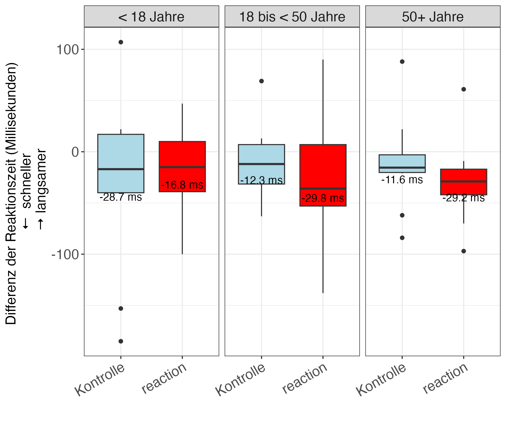

Resultate
Zusammenfassung
Insgesamt wurden 69 Teilnehmende in der reaction-Studie randomisiert (34 Teilnehmende in die Kontrollgruppe, 35 Teilnehmende in die reaction Gruppe). Wir finden keinen Effekt des reaction-Drinks auf die Reaktionszeit in der Gesamtstudienpopulation. Bei Frauen stellen wir einen statistisch relevanten Effekt des reaction-Drinks auf die Reaktionszeit fest. Die angestrebte Stichprobengrösse von 128 Teilnehmenden wurde nicht erreicht.
Rekrutierung
Gesamthaft wurden 69 Teilnehmende über einen Zeitraum von ca. 4 Stunden randomisiert. Die Grafik unten zeigt die Rekrutierung der Teilnehmenden seit der ersten Randomisierung einer Person in die Studie.
Merkmale der Teilnehmenden
34 Teilnehmende wurden in die Kontrollgruppe und 35 Teilnehmende wurde in die reaction Gruppe randomisiert. Andere Merkmale sind in der nachfolgenden Tabelle dargestellt. Die dargestellten Werte repräsentieren entweder eine Anzahl (mit Prozent) oder den Mittelwert (mit Standardabweichung).
Ergebnis in der Gesamtpopulation
Die mittlere Reaktionszeit (in Millisekunden) zum Ausgangszeitpunkt beträgt 332.1 ms in der Kontrollgruppe und 329.0 ms in der reaction Gruppe. Nach dem Trinken des Getränkes beträgt die Reaktionszeit in der Kontrollgruppe 315.6 ms und 308.9 ms in der reaction Gruppe. Die Differenz zwischen der Messung der Folgeuntersuchung und dem Ausgangszeitpunkt beträgt -16.4 ms in der Kontrollgruppe (d.h. Verbesserung der Reaktionszeit). Der Differenzwert in der reaction Gruppe beträgt -26.3 ms.
Die statistische Modellierung ergibt, dass die mittlere Differenz der Reaktionszeit zwischen der reaction Gruppe und der Kontrollgruppe -10.4 ms beträgt. Da das 95%-Konfidenzintervall den Nulleffekt (d.h. kein Effekt des reaction Drinks) beinhaltet, schliessen wir daraus, dass kein statistisch relevanter Effekt des reaction-Drinks in der Gesamtpopulation vorliegt. Diese Schätzwerte wurden für die Basis-Reaktionszeit und Altersgruppen adjustiert.

Ergebnisse nach Geschlecht
Die mittlere Differenz der Reaktionszeit bei Frauen beträgt -47.4 ms in der reaction Gruppe und -4.4 ms in der Kontrollgruppe. Bei den Männern beobachtet man eine Differenz von -6.3 ms in der reaction Gruppe und -28.5 ms in der Kontrollgruppe.
Bei Frauen gibt es einen statistisch relevanten Effekt des reaction-Drinks auf die Reaktionszeit: Frauen in der reaction Gruppe haben eine um 31.7 ms tiefere Reaktionszeit als die Kontrollgruppe mit einem 95%-Konfidenzintervalle von 5.5 bis 57.9 ms, welches den Nulleffekt nicht einschliesst.
Ergebnisse nach Alterskategorien
Die mittlere Differenz der Reaktionszeit bei den unter 18-jährigen Teilnehmenden beträgt -16.8 ms in der reaction Gruppe und -28.7 ms in der Kontrollgruppe. Bei den über 50-jährigen Teilnehmenden beträgt die Differenz -11.6 ms in der Kontrollgruppe und -29.2 ms in der reaction Gruppe.

Wir finden keine Evidenz für einen Effekt des reaction-Drinks innerhalb der gewählten Altersgruppen finden, da die 95%-Konfidenzintervalle den Nulleffekt beinhalten.